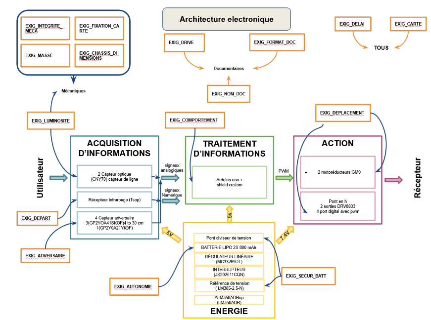
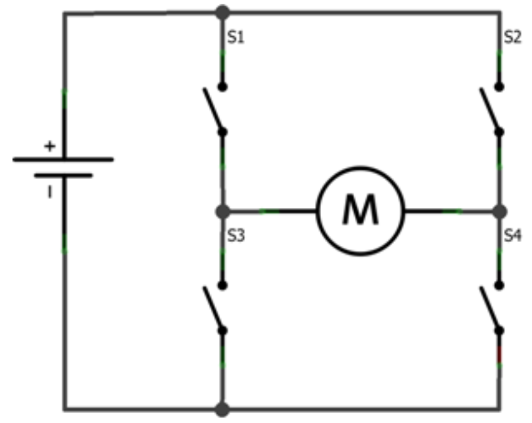
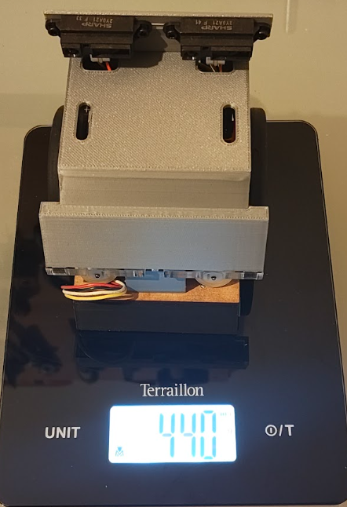

Réalisation du robot
Pour réaliser ce projet, il nous a été fourni un cahier des charges auquel le produit devait strictement correspondre.
L'objectif de ce projet était la réalisation d'un robot sumo. Il devait être capable de mener un combat s'inspirant des combats de sumo. Les deux robots sont placés côte à côte sur une arène et doivent pousser le robot adverse hors de l'arène.
1 - Conception préliminaire
La première étape, la conception préliminaire, consiste à identifier les éléments constituant les 4 blocs suivants :
- Acquisition
- Traitement
- Action
- Énergie
Les composants présents dans ces quatre parties sont des composants permettant de remplir les exigences du cahier des charges.
Il se peut que la carte électronique finale ne conserve pas tous les composants retenus ou voie apparaître de nouveaux composants.
La conception préliminaire constitue une ébauche des solutions possibles correspondant aux exigences du cahier des charges.
Nous réalisons donc le schéma suivant :

Nous allons maintenant voir ensemble l'utilité des composants mentionnés dans le schéma.
Pour marquer le début du combat, l'arbitre appuie sur un bouton d'une télécommande fonctionnant en infrarouge. C'est pour cela que nous avons choisi un capteur d'ondes infrarouges. Lorsque le signal de début de combat sera reçu, notre robot pourra attaquer le robot adversaire.
Afin que notre robot puisse détecter son adversaire, nous avons retenu, dans un premier temps, deux types de capteurs ; leur différence réside dans leur distance maximum de détection. Leurs technologies sont similaires : une LED infrarouge émet un signal puis calcule le temps qu'il met à revenir. Comme nous connaissons la vitesse de déplacement d'une onde infrarouge, nous pouvons donc en déduire la distance à laquelle se trouve le robot adversaire. (Par exemple, si on marche 30 min à 10 km/h alors nous aurons parcouru 5 km). Finalement, nous avons éliminé un type de capteur car sa distance de détection était trop élevée ; il aurait donc été perturbé par des éléments aux abords de l'arène.
D'après le cahier des charges, pour ne pas perdre le combat, le robot ne doit pas sortir de l'arène. C'est pour cela que nous avons sélectionné deux capteurs optiques capables de différencier le noir et le blanc. Ils ont donc pour objectif de détecter les lignes blanches délimitant l'arène sur laquelle les robots s'affrontent, puisqu'elle est noire au centre et entourée de blanc. Cela permettra donc au robot, via le programme, de ne pas sortir de l'arène.
Tous les composants cités précédemment constituent la partie d'acquisition d'informations de notre robot. Elle peut être vue comme les "yeux" du robot.
D'après le schéma ci-dessus, nous observons que le cœur de traitement sera, comme imposé par le cahier des charges, un microcontrôleur Arduino Uno. La carte que nous allons fabriquer viendra s'y connecter. L'Arduino est un microcontrôleur ; c'est lui qui va commander le robot selon le code que nous allons lui implanter. En d'autres termes, il est le "cerveau" du robot.
Le cahier des charges stipule que le robot doit être autonome en énergie pour une durée minimum de 15 min. Pour respecter cette exigence, nous avons sélectionné une batterie de 800 mAh. D'après les calculs préliminaires de consommation électrique du robot, cette valeur suffira.
Une exigence demande que, si la batterie est déchargée, donc si sa tension est trop faible, les moteurs du robot s'éteignent automatiquement. Pour ce faire, nous utilisons une référence de tension ; c'est un composant capable de donner une tension fixe, peu importe la tension qui l'alimente. Nous comparons ensuite cette tension avec celle de la batterie à l'aide d'un comparateur. Ce composant va produire une tension tant que celle de la batterie est supérieure à celle de la référence de tension, sinon il ne produira rien. Nous connectons ce comparateur à une broche du pont en H (voir explication de la partie action). Ce composant dispose d'une broche qui, lorsqu'elle reçoit un signal, coupe l'alimentation des moteurs.
La batterie sélectionnée, lorsqu'elle est pleinement chargée, produit une tension de 7,4 V. Or, certains composants que nous avons sélectionnés supportent au maximum 5 V ; afin de ne pas les endommager, nous devons donc réduire la tension qui leur arrive. C'est le rôle du régulateur linéaire : lorsqu'il est alimenté par la batterie, il produit 5 V de tension de sortie, permettant de n'endommager aucun des composants présents sur la carte.
Nous choisissons un interrupteur afin de pouvoir alimenter ou non le robot. Cet interrupteur est bistable, cela signifie qu'il a deux positions : alimenté ou non.
Afin de permettre au robot de se mouvoir, le cahier des charges nous impose deux motoréducteurs. Un motoréducteur est un moteur associé à sa "boîte de vitesses", permettant de décupler son couple. Afin d'alimenter et contrôler les moteurs, nous utilisons deux ponts en H. Avec le microcontrôleur, nous commandons le pont en H, qui commande ensuite les moteurs. Cela permet d'alimenter les moteurs, mais aussi de commander leur sens de fonctionnement, horaire ou anti-horaire.
Sur le même principe, nous réalisons cette étude pour la partie informatique. Nous procédons à une analysis permettant de définir quelle fonction informatique permettra de respecter le cahier des charges. Nous en déduisons le schéma suivant :

Dans la partie acquisition sont répertoriées les fonctions qui nous permettront de lire les valeurs renvoyées par les capteurs (présence ou non de ligne
sous les capteurs de ligne et distance avec l'adversaire).
Dans la partie traitement, les fonctions qui permettront de prendre des décisions en fonction des informations des capteurs. Par exemple, nous allons mettre
dans cette partie la condition suivante : si la ligne blanche délimitant l'arène se trouve à l'arrière du robot, alors il doit avancer.
La partie Action répertorie quant à elle les fonctions qui permettront de mettre en marche les moteurs (en avant ou en arrière).
La partie énergie ne nécessite pas de code car la solution sélectionnée est exempte de logiciel ; elle est donc purement matérielle.
2 - Conception détaillée
Après avoir fait cette étude, nous réalisons la conception détaillée. Pour ce faire, nous reprenons les éléments de la conception préliminaire que nous développons : comment allons-nous relier les composants entre eux, quelle valeur de résistance est nécessaire, tout ce que nous devons faire pour que la carte soit fonctionnelle. Nous procédons également à l'élaboration du schéma électrique ainsi que du schéma de routage représentant les pistes de la carte électronique.
Schéma électrique

Dans un premier temps, nous allons voir les modifications qui ont été apportées entre la conception préliminaire et la conception
détaillée. Ensuite, nous expliquerons de manière plus approfondie les éléments constituant la carte.
Modifications
Dans la partie acquisition, nous avons donc décidé de mettre deux capteurs d'adversaire afin d'élargir le champ de détection de notre robot. Nous n'avons pas apporté d'autre modification à cette partie.
La partie traitement, étant imposée par le cahier des charges, n'a pas reçu de modification. Nous conservons donc le microcontrôleur Arduino Uno.
Nous n'avons apporté aucune modification à la partie énergie.
La partie action comporte quelques modifications : nous avons ajouté une LED RGB (elle est donc capable de générer toutes les couleurs) qui permet de nous donner des informations sur l'état du robot. Nous avions attribué le vert clignotant lorsqu'il attend le signal de l'arbitre, le vert fixe lorsqu'il l'a reçu et qu'il combat. Nous avons sélectionné une LED RGB afin d'avoir un maximum de possibilités pour permettre des améliorations futures. Nous avions également prévu, comme amélioration future, d'installer une fourche à l'avant du robot afin de soulever l'adversaire pour le faire tomber de l'arène plus aisément. C'est pourquoi nous avons des connecteurs supplémentaires afin d'y connecter les servomoteurs permettant le relevage de la fourche. Nous n'avons malheureusement pas eu le temps de mettre en œuvre cette amélioration.
Explications
Dans la partie acquisition, nous avons doté notre carte de deux capteurs de distance et de deux capteurs de ligne ; les capteurs de ligne captent aux coins du robot. Ils sont analogiques (voir explication partie traitement),
cela signifie qu'ils renvoient une infinité de valeurs.
Les valeurs qu'ils renvoient lorsqu'ils mesurent du noir ou du blanc correspondent à ces valeurs maximale et minimale.
Nous nous étions laissé la possibilité de connecter soit un capteur de ligne arrière, soit un troisième capteur de distance.
Nous avons décidé de mettre un capteur de ligne arrière car il n'était pas possible de ne pas en avoir : le robot n'aurait pas pu capter les lignes
arrière et les aurait donc dépassées, perdant le combat. Les capteurs de distance et d'infrarouges disposent de trois broches : deux broches d'alimentation (5V et masse) et une broche permettant de transmettre l'information.
Les capteurs de ligne disposent quant à eux de quatre broches. En effet, ils sont en fait constitués de deux capteurs groupés sur un même petit circuit imprimé que l'on fixera sur
la carcasse du robot. Il y a donc deux broches d'alimentation communes aux deux capteurs et deux broches d'information dédiées à chaque capteur.
La partie traitement ne contient que le microcontrôleur. Nous pouvons voir sur le schéma toutes les connexions établies entre le microcontrôleur et les autres composants.
Les broches affichées "analog" sont des broches capables de recevoir des données analogiques, donc des données pouvant prendre une infinité de valeurs ; c'est pour cela que les capteurs de distance y sont connectés.
L'alimentation électrique se fait par une batterie. Celle-ci, comme demandé dans le cahier des charges, est protégée par un système
que nous avons choisi et qui est purement matériel. Il est composé du comparateur, représenté par un triangle sur le schéma. Celui-ci dispose de 5 broches dont deux broches d'alimentation.
La référence de tension est représentée par un triangle avec un symbole sur la pointe ; c'est ce composant qui stabilise la broche - à 2,5 V. Nous pouvons voir que la broche + est connectée à un pont diviseur de tension ; les deux rectangles représentent des résistances.
Le but est d'abaisser les tensions qui arrivent à la broche +. Nous avons calculé les valeurs de résistance de manière à ce que, quand la batterie est à une certaine tension, cela corresponde à 2,5 V. Si la tension de la batterie continue de diminuer, la tension arrivant à la broche diminuera elle aussi également. Comme la tension au plus sera inférieure à celle au moins, le comparateur ne renverra rien. Il est connecté à
une broche du pont en H qui, lorsqu'elle ne reçoit rien, coupe l'alimentation des moteurs. Sur l'alimentation de ce composant et sur celle du régulateur linéaire
(le rectangle en haut à droite de la partie acquisition), nous observons la présence de condensateurs (C1, C2 et C3). Leur objectif est de "lisser" la tension d'alimentation à 5V ; ce sont de petites batteries
capables de se charger et se décharger très rapidement. Lorsque la tension augmente, ils se chargent, puis lorsqu'il y a une chute de tension, ils se déchargent, relevant ainsi la tension d'alimentation.

Je vais ici faire une explication sur le fonctionnement du pont en H car c'est un composant essentiel au fonctionnement du robot.
Comme nous pouvons le voir sur le schéma, un pont en H est composé de quatre interrupteurs (S1, S2, S3, S4). Les moteurs électriques tels que ceux que nous utilisons peuvent tourner dans les deux sens de rotation ; il suffit d'inverser le branchement. C'est le rôle du pont en H. En effet, si S1 et S4 sont fermés et S2 et S3 ouverts, alors le courant va passer comme le tracé de la ligne verte. À l'inverse, si S2 et S3 sont fermés, alors le courant va passer comme sur la ligne rouge. Le composant que nous utilisons permet de faire ça en le commandant par logiciel.
Le composant D1 est une LED RGB (Red, Green, Blue) : elle peut générer du rouge, du vert, du bleu, et tout leur mélange ; elle peut donc générer toutes les couleurs existantes. Dans son fonctionnement, elle est assimilable à trois LED en une. C'est pour cela qu'elle a quatre broches : une masse commune et trois broches d'alimentation.
Conception informatique
Lors de la conception informatique, nous avons compilé les fonctions précédemment citées dans l'architecture informatique afin de donner au robot le comportement souhaité. Nous
avons donc décidé de faire en sorte que notre robot contourne l'adversaire afin de le pousser de côté ; ainsi, le robot adverse ne peut pas lutter car il n'a pas de moteur dans ce sens
pour contrer notre poussée.
En parallèle de toute la partie de conception, nous rédigeons le dossier de conception détaillant tous les choix techniques que nous
avons faits et pourquoi nous les avons faits.
Le dossier de conception est disponible ici.
3 - Fabrication de la carte
Afin de fabriquer notre carte électronique, il a été nécessaire de rédiger un document répertoriant l'ensemble des documents nécessaires : le schéma électrique, le plan de routage de chaque face de la carte, le schéma d'implantation de chaque face, le plan de perçage, ainsi que la nomenclature.
Le plan de routage représente les pistes de cuivre reliant les composants entre eux. Le schéma d'implantation représente le positionnement des composants sur la carte électronique. Le plan de perçage représente tous les endroits où il faudra percer la carte, avec les diamètres des trous à faire.
Le plan de routage n'est pas à l'envers afin d'imprimer les pistes dans le bon sens lorsque les schémas (servant de masque) seront collés au circuit imprimé vierge.
Le dossier de fabrication est disponible ici.
4 - Vérification de la carte
Maintenant que nous avons fabriqué la carte, nous devons nous assurer que toutes les exigences formulées par le client sont respectées ; c'est pourquoi nous rédigeons un dossier de vérification. Il contient chaque test réalisé et le résultat associé.
Dans un premier temps, nous avons vérifié les exigences mécaniques (dimensions, masse, etc.). Le robot devait avoir des dimensions inférieures à 100 mm de largeur et 100 mm de longueur. Afin de vérifier cette exigence, l'équipe enseignante nous a mis à disposition un gabarit. Si le robot rentre dedans, alors il est conforme.
Notre robot était conforme à cette exigence.
Nous avons ensuite vérifié l'exigence de masse : le robot devait peser moins de 500 g. Nous l'avons alors posé sur une balance, il était conforme.

Nous avons ensuite vérifié les exigences de la partie énergie.
La première exigence vérifiée fut l'exigence de sécurité de la batterie (l'exigence demandant que les moteurs soient coupés si sa tension est trop faible). Pour faire cela, nous avons alimenté le robot avec une alimentation stabilisée ; sa particularité est que nous pouvons modifier la tension d'alimentation durant le fonctionnement, et ce de manière précise. Nous alimentons donc le robot à la tension de la batterie lorsqu'elle est chargée, c'est-à-dire 7,4 V, puis nous diminuons progressivement jusqu'à 6,7 V, tension à laquelle elle devrait s'arrêter. C'est à ce moment que nous constatons une défaillance sur notre prototype : la tension à laquelle les moteurs se sont arrêtés est de 6,6 V. Malgré le fait que cette valeur soit très proche, il aurait dû s'éteindre dès 6,7 V. Ce problème est dû au calcul des valeurs de résistance du pont diviseur de tension.
Pour l'exigence d'autonomie, il nous a été précisé que le robot était conforme s'il pouvait fonctionner pendant 15 min en ligne droite sans rencontrer d'obstacle. Nous avons donc mesuré l'intensité qui était nécessaire à son fonctionnement en ligne droite. Puis, par calcul, nous avons obtenu le temps d'autonomie correspondant à la capacité de la batterie. Nous calculons une autonomie en ligne droite sans obstacle de 135 min ; notre robot est donc conforme à cette exigence.
Ensuite, nous avons vérifié les exigences d'acquisition d'informations.
La première exigence de cette partie est l'exigence relative à la détection de l'adversaire. Nous positionnons un gabarit représentant un robot adversaire à une distance de 40 cm ; nous constatons que notre robot ne le détecte pas.
Les capteurs sont bien capables de détecter à cette distance et plus, seulement ils sont légèrement trop inclinés vers le sol. Notre robot avait donc la capacité de détecter son adversaire à environ 35 cm. Nous avons ensuite repris la
relation liant les temps d'émission et de détection des infrarouges à la distance correspondante, et notre robot capte donc correctement l'adversaire.
Nous avons ensuite testé la fiabilité de notre robot. Pour ce faire, nous avons mis le robot en mode attente (lorsqu'il attend le départ du juge), puis nous avons éclairé fortement le capteur destiné à détecter le signal de la télécommande. Nous n'avons constaté aucun départ imprévu. La deuxième phase de ce test consistait à s'assurer qu'il peut combattre même s'il y a de fortes lumières ; nous avons donc lancé un combat et éclairé fortement le robot, et nous n'avons constaté aucune anomalie dans son fonctionnement. Il est donc conforme.
Afin de verifier l'exigence stipulant que le robot doit attendre le signal du juge (appuie sur une touche de la télécommande) pour commencer le combat, nous avons allumer le robot, appuyer sur une touche de la télécommande et avons constaté que le robot a commencer le combat. Cette exigence est donc respectée.
Ensuite nous avons éffectuer les vérifications de la partie action.
Cette partie ne comporte qu'une exigence stipulant que le robot doit pouvoir trouné a droite, à gauche, aller en avant et en arrière. Afin de vérifier cette exigence, nous allumons le robot lançons un combat, nous utilisont un gabarit afin de simuler le robot adverse. Nous constatons que le robot est capable d'aller dans toute les directions, l'exigence est donc vérifiée.
Pour finir, nous avons vérifier les exigences de traitement d'information.
L'objectif ici est de s'assurer que le robot se comporte bien comme attendu. Nous devons donc voir notre robot chercher l'adversaire tant qu'il ne le voit pas, l'attaquer lorsqu'il le trouve tout en le suivant dans ses déplacement. Il doit aussi rester dans l'arène en se référent au ligne blanche la démimitant. Lorsque nous lancon un combat, nous constatons que le robot a bien le comportement attendu.
Conclusion
Ce projet nous a permis de développer nos compétences de travail d'équipe, de conception mais aussi de fabrication de cartes électroniques, le tout en respectant rigoureusement un cahier des charges fourni par le client mais aussi en produisant des documents permettant de montrer au client que le produit en développement correspond à ses attentes.